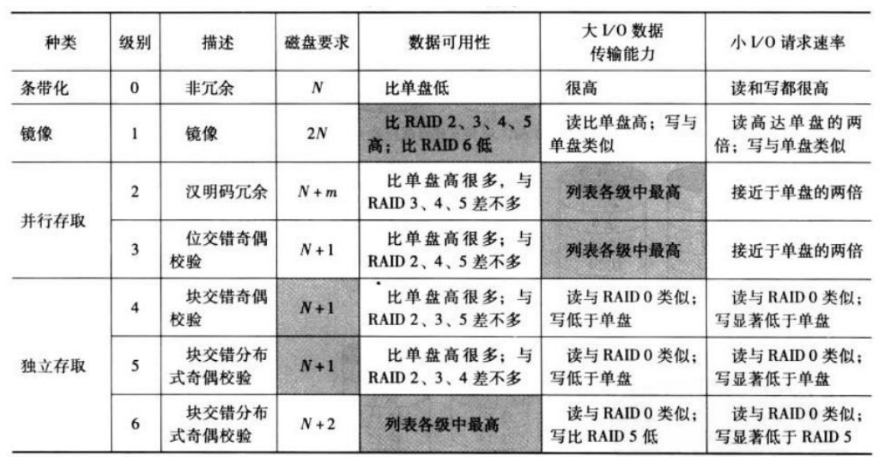
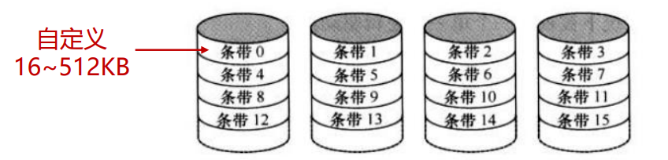
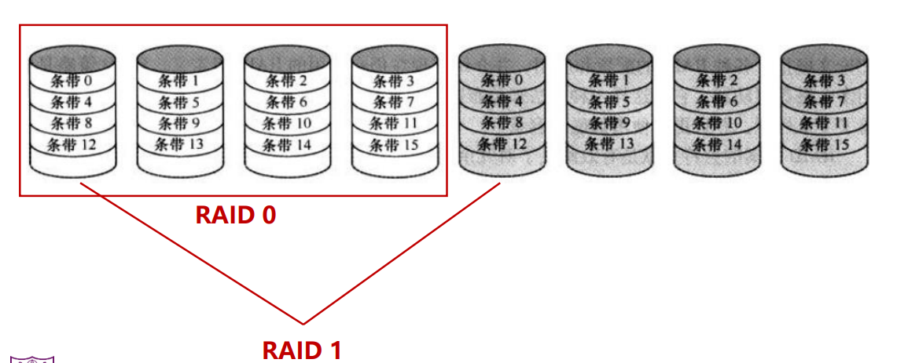
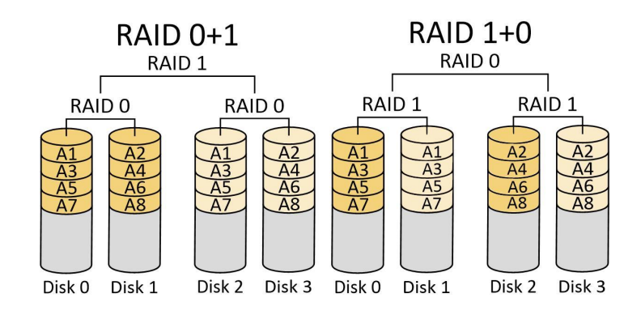
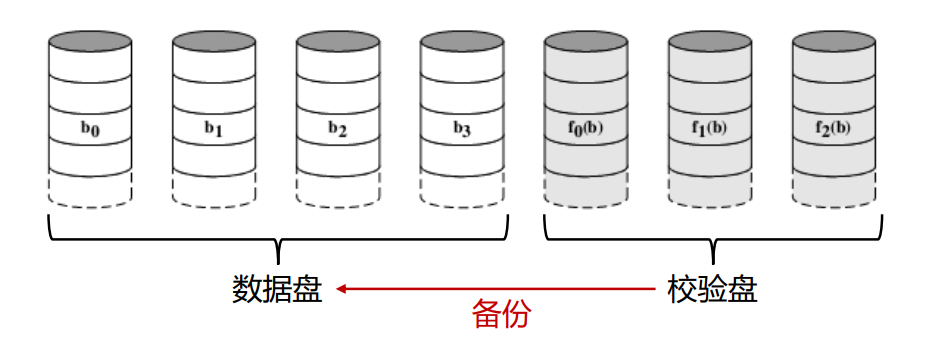
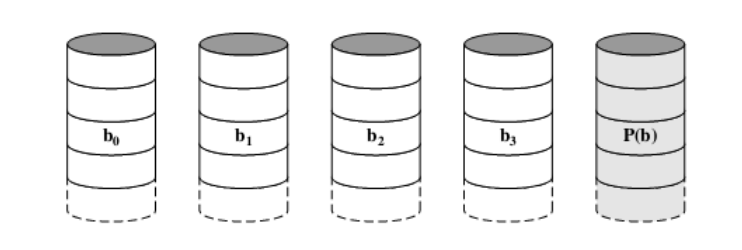
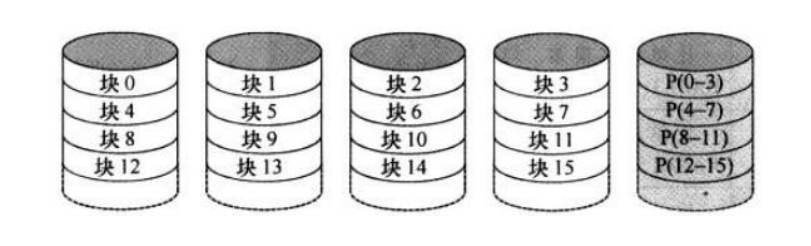
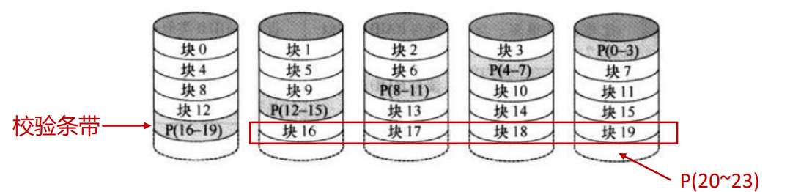
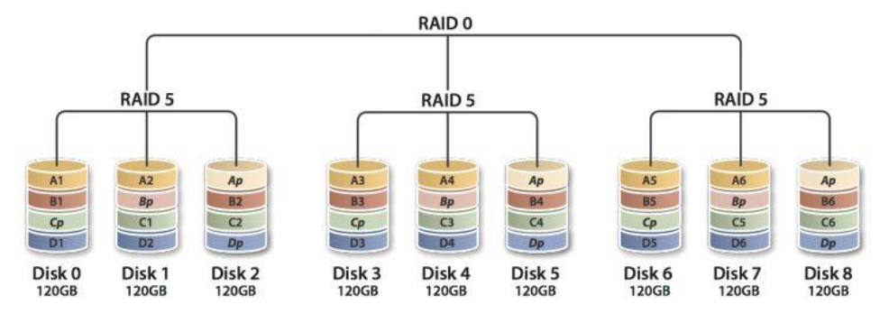
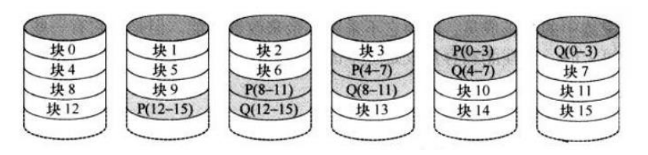

冗余磁盘阵列
- 将多个独立操作的磁盘按某种方式组织成磁盘阵列，以增加容量
- 将数据存储在多个盘体上，通过这些盘并行工作来提高数据传输率
- 采用数据冗余来进行错误恢复以提高系统可靠性
由一组物理磁盘组成，每个物理磁盘被视为单个逻辑驱动器，数据分布在多个磁盘上，冗余磁盘用于存储校验信息，保证磁盘损坏时可以恢复数据
RAID分类

RAID 0
- 数据以条带的形式在可用磁盘上分布（条带：一个磁盘阵列被分成很多个条带，条带横跨所有数据磁盘，并且每个磁盘上都有这个条带的一部分。每个磁盘上属于每个条带的一部分被称为条带深度。如果时字节级条带化，那么数据存储时，每个数据块的一个字节在一个磁盘上，下一个字节就在下一个磁盘上。以此类推）
- 不采用冗余
- 用途：高数据传输率，高速相应IO请求(两个不同的IO请求在不同的磁盘上)

RAID 1
- 采用数据条带：是
- 实现冗余方法：简单备份所有数据
- 用途：读请求</font color = blue>块（选择寻道时间较小的那个），写请求受限于写入较慢的磁盘；高速相应IO请求，恢复受损磁盘简单。

RAID01和RAID10
RAID01：先做0再做1；RAID10：先做1再做0

RAID2
- 并行存取（所有磁盘都参与每个IO请求的执行）
- 每个驱动器的轴同步旋转，磁头位置相同
- 采用数据条带：是，并且数据条带非常小（一个字节或一个字）
- 实现冗余方法：海明码，另外的数个校验盘，同一条带的各个数据盘上的数据位计算的校验码存放在校验盘的对应位置
- 用途：读请求要读出请求和校验码，写请求访问所有数据盘和校验盘
- 价格昂贵，实际基本弃用

RAID 3
- 并行存取，数据条带小
- 实现冗余方法：所有数据盘上 同一位置的数据计算奇偶校验码。当某一磁盘损坏时，可以用于重构数据。(假设b0是损坏的盘中的一位，那么)
- 用途：数据传输率非常高，但是</font color = orange>一次只能执行一个IO请求。

RAID4
- 采用独立存取技术（IO并行处理），数据条带较大（常见位=为4KB），即采取了块级条带化</font color = orange>（这是与RAID3最大的区别，RAID3采取的一般是字节级条带化）
- 实现冗余方法：各个数据盘上的数据来逐位计算奇偶校验条带，奇偶校验位存储在奇偶校验盘的对应条带上**（生成的内容RAID3一致）**
- 用途：写数据时，如果规模小会发生写损失(要修改用户数据和校验位)，规模大可以直接使用新的数据位替代原来的（横跨多个磁盘的时候），并且由于没错都需要使用校验盘，校验盘会成为瓶颈（因此这个基本弃用，并且也诞生了RAID5）

RAID5
- 与RAID4组织方式相似（独立存取，块级条带化）
- 实现冗余方法：在所有磁盘上都分布了奇偶校验条带
- 访问时的“两读两写”：


RAID50：将不同RAID5多组构成条带访问

- RAID 50在底层的任一组或多组RAID 5中出现1颗硬盘损坏时，仍能维持运作;如果任一组RAID 5中出现2颗或2颗以上硬盘损毁，整组RAID 50就会失效
- 性能比起单纯的RAID 5高，但容量利用率比RAID5要低
RAID6
- 实现冗余方法：采用两种不同的校验码，以分开的块存于不同的磁盘中
- 用途：提升数据可用性（平均修复间隔内出现3个磁盘故障才会数据损失），但是每次写都要影响两个校验块（写损失，读3个写3个磁盘）

RAID比较：
- RAID 0：提升I/O响应能力，但数据可用性低
- RAID 1：提升数据可用性，但容量利用率低
- RAID 2 和 RAID3：提升数据可用性和数据传输率，但一次只能处理一个I/O请求
- RAID 4 和 RAID 5 和 RAID 6：提升数据可用性和读速率，但写速率受限